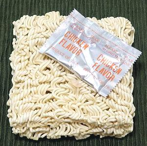
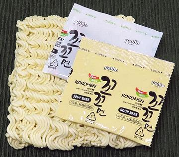
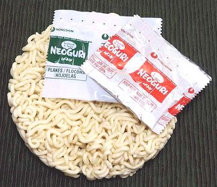

These are the "official" Ramen Noodles, and may be straight (usually dried) or curly (usually freshly made). Despite "ramen" being derived from "lamian", they are cut, not pulled. These are wheat noodles of a type first made in Inner Mongolia, near lakes high in sodium carbonate and potassium carbonate. Containing one or both of these salts is the defining difference between ramen noodles and other wheat noodles. These salts help the noodles stay firm and springy in hot soup.
Chinese immigrants brought these noodles to Yokohama, Japan possibly by 1859. The first Japanese owned shop to serve ramen presented in a Japanese style opened in 1910, employing cooks from Yokohama's Chinatown. Stories about ramen coming to Japan much earlier have not a shred of supporting evidence.
Ramen noodles are used in Ramen Soups. These are assembled soups, noodles in the bowl, broth poured over, toppings placed on the surface. Every province has its own style and special toppings. The Broth is usually from meat, but sometimes fish, and is usually clear, but in some provinces, Miso is included.
More on Asian Noodles.
"Instant Noodles" were invented by Momofuku Ando in 1958. He founded the company now known as Nissin Foods. The company started distributing the first "Instant Ramen" in Japan in 1968, as a way something similar to ramen soup could be easily made in the home just by adding boiling water. the product line was quickly expanded, and was being exported to the United States by 1972.
 This is what Ramen is to most Americans, having never known any other form, except the same thing in cups. American Ramen has been heavily criticized as a junk grade product, but it's not our fault. The Japanese have had a romance with packaged "convenience food" products since the fall of their empire - and all three major brands sold here are Japanese. Nissin Foods ("Top Ramen, Cup Noodles"); Maruchan ("Maruchan Ramen"); Sanyo Foods ("Sapporo Ichiban"). They all started importing these products from Japan in the early 1970s, and set up manufacturing the very same products here in the mid 1970s.
But, we must not harsh these products too severely, as they have provided the major mid-day nutrition to two generations of college students, computer programmers, tech nerds, and gamers. This is a demographic who's three major food groups are caffeine, sugar, and salt, with a side of fat. Flavor is not an issue if there is sufficient salt.
The photo to the left is typical. It has a long list of ingredients, of which the very last and least is "cooked chicken powder". The product weighed in at 3 ounces, and cost 2022 US $0.69. Instructions are to boil 2 cups of water, stir in noodles for 3 minutes, turn off heat, and stir in broth powder. Actually 4 minutes would be better, and it could stand another 1/4 cup of water. the noodle block was 4-1/4 x 3-3/4 x 1 inch and weighed 2.9 ounces.
OK, I confess to occasionally eating this type Ramen for lunch when I'm
working hard at the computer. This is my formula. Make a thin cut at the top
of the envelope and remove the broth package. Leave the cookie in the envelope
and pound it with a kitchen mallet until the noodles are quite small. Put
2-2/3 cups water in a pan and crush in 1 hot Thai dried chili (or 3 Aji
Charapita - or whatever will match "extra spicy" at a Thai restaurant).
Bring to a boil and pour in the noodles. Simmer for 5 minutes. Stir in the
Broth Powder. Serve.
 Fortunately, we have a very favorable alternative to these Japanese-American products. Here in the multi-ethnic markets of Southern California, Korean Instant Noodle products are gaining major shelf space. Pictured to the left is a Korean version of "Instant Noodle with Chicken Flavored Spicy Soup". The Koreans don't call it "ramen" because they're still really, really pissed off at the Japanese for their horrid wartime atrocities (and who isn't). Besides, Korea is way closer to Inner Mongolia and probably "ramen" noodles centuries before the Japanese got them. This particular product has a bit of chili bite, just enough to be acceptable here in Southern California, where soup without a touch of chili is nearly unthinkable.
The package weighs in at 4-1/4 ounces, and calls for the same 2 cups of water as the Japanese, but I wouldn't use less than 3 cups. The package claims simmering for 4 minutes, but 5 is better. The noodle block measures 5 x 4 x 1 inches and weighs 3.8 ounces.
This package cost just under 2022 US $1.00 per package, in sets of 5.
Some other Korean Instant Noodle products are a little higher, but the
price rewards you with superior product - more than worth it.

Here is my all-time favorite, Neoguri Spicy Seafood Flavor Udon Type Noodles - (Nongshim). When I first started buying it, many years ago, I used it as instructed on the package, except breaking up the noodles so I could easily eat them with a spoon, and using about 3 cups of water instead of 2. I was delighted with it.
Today, I start by pouring the herbal package into the pot, then crush in some really hot chilis to spice it up a but - two Thai type chilis, or 5 Aji Charipita (tiny, but very hot). I put in about 5 cups of water. Then I check my freezer compartment for bits and pieces of seafood. I use at least 3 of Shrimp, Fish, Clams, Squid, Cuttlefish, Sea Cucumber, Fish Balls, and sometimes pieces of rice cake. I thaw them and cut them up as needed,
After bringing the pot to a boil, I break up the Noodles and stir them in.
After it comes back to a boil, I add the seafood, and a little water if
needed to bring it to 6 cups. When it boils again, I add the broth powder
and serve. Yum!